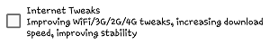

Hello! Thanks for installing free version of System Tweaker application!
This
version has limited in functionality, and all other major functions of
the program present in the PRO version of the program, such as:
1)
"Speed up in one click"
2)
SDCard Read/Write Fix (Android 4.4-7.0)
3)
DPI Changer
4)
Kernel Tuner (change frequency, governor, I/O sheduler), applying varios
kernel tweaks, enabling specific functions
, applying I/O tweaks
5)
Google Services battery drain fix
6)
OOM Killer Tuner
7)
Change TCP mode
8)
Entropy Generator
9)
Applying GPS tweaks, which can increase the satellite search speed,
increase their number
10) Tweaks for Android 7.X
12)
Gaming mode
13) FPS Unlocker
14)
Sound improver
Please
buy PRO version of the program!
Also,
apparently, this is the first time you run the program. We need to tell
you how to use the program, as well as to inform a couple of little
things.
How to use program
To
apply a tweak, click on it, wait for 2-5 seconds
. At the same time have patience, do not press
many times for various checkboxes, or the program may crash.
Apply tweaks with
specific pause, ie if you select tweak, before applying another wait for the notice
"Tweak is applied."
And it's all! Hooray! Tweek applied!
Similarly,
with other actions. Also keep in mind that using kernel tweaker when
booting will work only when the program is installed!
Note that
before removing \ reinstall the program, disable unnecessary tweaks,
because if they are not turned off after uninstallation, they remain in
the system.

Important notice about the use of the program:
Also,
when you click on the button "Understand" you acknowledge that after
the opening of the application you have read the agreement and
automatically agree with him!